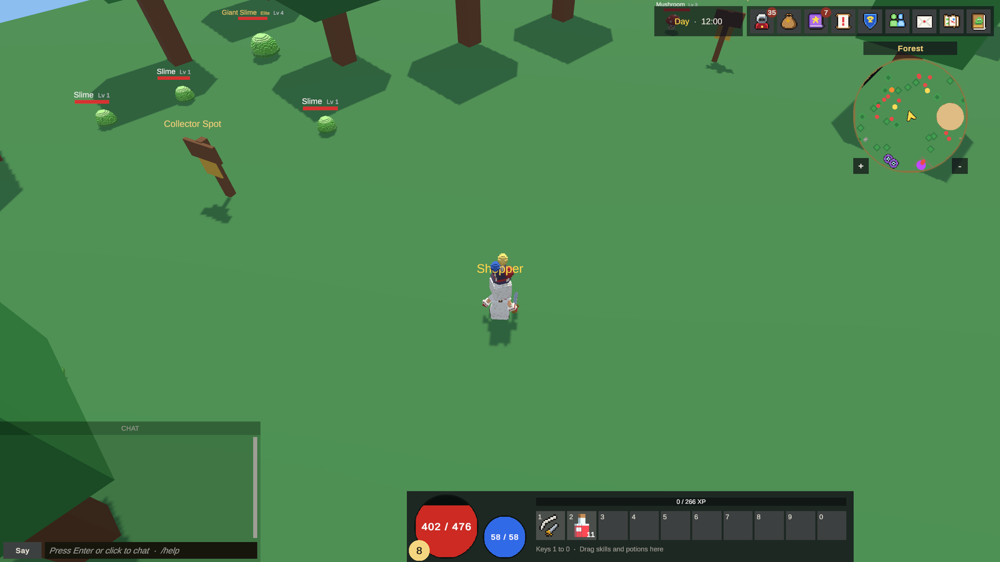
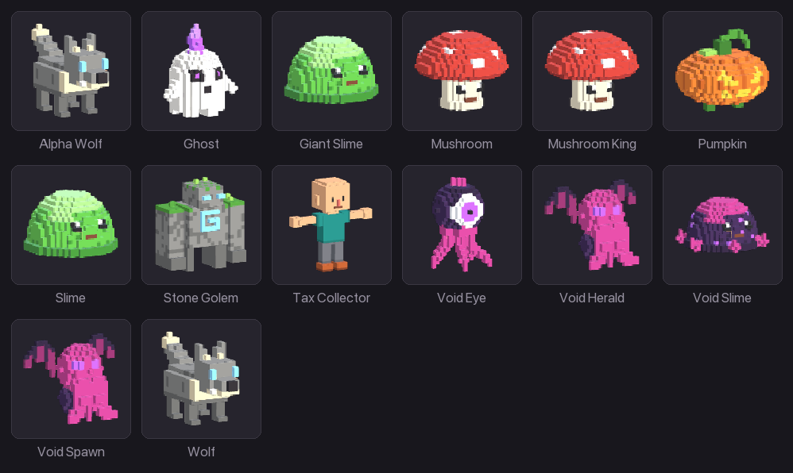

Getting started
Features
Everything KitARPG does, grouped by area, with a link to the page that explains each part. Use it to check whether the kit covers what your game needs.
The game


Modes and platforms
| Feature | What you get | Page |
|---|---|---|
| Single player and MMO | The same scenes and code run as a self-hosted single player game saved on the player's computer, or as an MMO with Login, Central and map servers | Introduction |
| Three control modes | Top-down (click to move, optional keys, Diablo style), free camera (cursor aims, right button turns the camera) and third person (crosshair aim, client prediction, dodge) | Control modes |
| Touch controls | On-screen stick, Attack button, skill buttons 1 to 4 in an arc, a consumable button, Activate, drag-to-aim skills, pinch to zoom | Touch controls |
| Input | Works with the Input System package or the old Input Manager, whichever the project uses | Keys |
| Platforms | Builds for Mac and Windows (clients and single player), map servers for Mac, Windows and Linux (Docker) | Builds |
Characters
- Modular characters on a shared humanoid skeleton, with regions for head, hair, chest, hands, legs and feet. The sample has man, woman and panda bodies, three hair styles and hundreds of gear pieces in voxel art, all using one material.
- Player models with the classes each look can be. The server refuses a class the model doesn't offer. See Player models.
- Classes with attributes and stats per level, starting skills and starting items. The sample has Warrior, Hunter, Mage and Monk (the Monk is the panda). See Classes.
- Attributes and stats, with points to spend at each level and whole-number bonuses. The sample has Strength, Agility, Intelligence, Vitality and Luck. See Attributes and stats.
- Animations per weapon type and per skill, with the moment each hit lands, and an optional upper body mask so characters attack and cast while walking.
Combat
- Real-time combat decided on the server, with damage elements and resistances (the sample has Neutral, Fire, Water, Earth and Air).
- Skills with targets and area shapes (circle, cone, line), cost, cooldown and cast time per rank, and a list of effects: damage, heals, shields, damage over time, statuses, pushes and pulls, summons, revives, bounces, piercing, zones and more. See Skills.
- Statuses (buffs and debuffs) such as poison, burn, bleed, stun, root, slow, silence, shields, invisibility and invulnerability, with immunities and resistances. See Statuses and buffs.
- Area previews before casting, with an option to cast at once.
- Line of sight, stealth, threat, and monsters that sleep when nobody can see them.
- Monsters that wander, chase, return home and help their pack; Normal, Elite and Boss ranks; bosses with phases, enrage and a boss bar. See Monsters and Bosses.
- Recovery in and out of combat, death penalties and respawn rules. See Recovery and death.
Items and equipment
- Weapons in 16 weapon types in the sample (sword, greatsword, spear, bow, axe, mace, halberd, scythe, crossbow, wand, staff, scepter, tome, orb, dagger and fist), shields, hats, cloaks, amulets, rings, chest, gloves, legs, boots, ammunition, consumables, gems, resources and quest items. See Items.
- Random bonuses per copy: each bonus on a piece of gear rolls between a minimum and a maximum for every copy.
- Sets, upgrades with runes (each step can succeed, fail, lose a level or break the piece), gem sockets, ammunition and dual wielding. See Sets, upgrades and sockets.
- Cosmetics that change only the look.
- Consumables with effects: healing, scrolls of experience, level, points and return, scrolls that cast a skill, books that teach a skill.
- A bag by slots or by weight, with overload, and the bank as a fallback so nothing is ever lost. See Inventory and bank.
- Currencies: gold plus any other money, and a premium currency for the in-game shop. See Currencies.
World
- Maps as Game Database entries plus scenes, joined by portals and teleport NPCs. See Maps.
- Instanced dungeons: each party, or each player alone, gets its own copy. The sample has the Sunken Crypt. See Dungeons.
- Day and night with a game clock, night lights and monsters that spawn only by day or by night. See Day and night.
- World triggers and story flags, personal or for everyone. See World triggers.
- Discovery zones, a minimap and a world map.
- A bestiary with where each monster lives and what it drops. See Bestiary.
Quests and NPCs
- Quests with Kill, Collect, Talk, Explore and Trigger objectives, chains, dailies, quest-only loot, requirements, rewards and quest markers over NPCs. See Quests.
- Conditions and actions that lock and reward anything: quests, dialogue lines, NPC options. See Conditions and actions.
- Branching dialogues. See Dialogues.
- NPCs with options: shop, teleport, quest, dialogue, skill trainer, bank, guild bank, guild founding, guild hall, mail, market, forge, tax collector spot and trigger. See NPCs and NPC shops.
Social
| System | What players do | Page |
|---|---|---|
| Chat | Say, map, world, whisper, party, guild and alliance channels, with a word filter | Chat |
| Friends | See who is online and where | Friends and parties |
| Parties | Up to 5 players, shared experience, the same dungeon copy | Friends and parties |
| Trade | Face to face, items and gold, both sides lock and confirm | Trade |
| Letters with gold and up to 5 items, also to offline players | ||
| Guilds | Roles with permissions, levels, a guild bank, emblems, history, alliances with their own chat, a guild hall | Guilds |
| Tax collectors | Guilds place them on maps; they take a share of what is hunted nearby and can be attacked | Tax collectors |
| PvP and duels | Duels anywhere; PvP in zones or on whole maps | PvP and duels |
Economy
- No selling to NPCs by default, so items move between players.
- Salvage into runes at the forge. See Forge.
- A player market where sellers are paid by mail. See Market.
- Server rates for experience, loot and gold, plus timed rate events.
- An optional in-game shop with its own premium currency, run as its own service, with categories, search, banners, ribbons, offer pages, gifts and real-money payments through webhooks. See Cash shop and Shop service.
Moderation
- Four GM levels: Player, Moderator, Game Master and Admin.
- Slash commands typed in chat and an in-game GM panel (
F8). See GM commands. - Every staff command recorded in the
gm_audittable before it runs. - A game log of what matters for support, player reports and a chat filter. See Game log and reports.
The editor

| Tool | What it does | Page |
|---|---|---|
KitARPG window (Ctrl/Cmd+Shift+K) |
Every tool in one window with a sidebar | KitARPG window |
| Overview | A to-do list of what stands between you and playing, a Play button, counts and common tools | Overview |
| Play & Servers | Single player or MMO, step by step, with the services and their log | Play & Servers |
| Game Database | Every class, item, skill, monster, quest and map, with assistants for new models and monsters | Game Database |
| Game Settings | How the game plays, in cards | Game Settings |
| Modules | Turns whole systems on and off | Modules |
| Shop | Edits and publishes the in-game shop catalog | Shop page |
| Project Check | Finds broken references, repeated ids, network problems and missing scenes; runs before every build | Project Check |
| Setup Wizard | Two steps from import to playing | Setup Wizard |
| Kit updates | Add what a newer kit brings without overwriting your changes | Updating the kit |
| Play with two players | Two editors, two test accounts, one click | Quick start: MMO |
| Play mode tests | The kit's own tests, from a menu or the command line | Troubleshooting |
Servers
- Login (accounts, sign in, characters), Central (sessions, tickets, chat, friends, parties, guilds, mail, market; starts map servers) and the optional Shop, on .NET 10. See Services.
- PostgreSQL in production, SQLite on one computer, behind the same data layer. See Database.
- Passwords hashed with Argon2id, short-lived signed tokens, "Remember me" tokens that work once, rate limits and account lock after wrong passwords.
- A launcher that starts everything with one click, with a window or headless. See Launcher.
- Docker Compose with Caddy for HTTPS, and Linux map server builds. See Docker.
- Modules for Login and Central, so you extend the services without editing them. See Service modules.
DevKit
- Your code goes in your own assemblies made from Create > KitARPG > Scripts.
- Templates for skill effects, item effects, conditions, game actions, quest objectives, NPC options, player systems, network messages, GM commands, game log listeners, combat and stat formulas, saved player data, player system overrides, item and player menu lines, settings options, validator checks, KitARPG window pages and kit updates. See Templates.
- Static events on the server and the client, and virtual methods on windows, player systems, monsters and NPCs.
- Your own data saved per character, your own messages to Central.
- A complete example, the Bounty Board, built without touching the kit. See Example: bounty board.
- An API reference for every public type, in
Documentation/API.